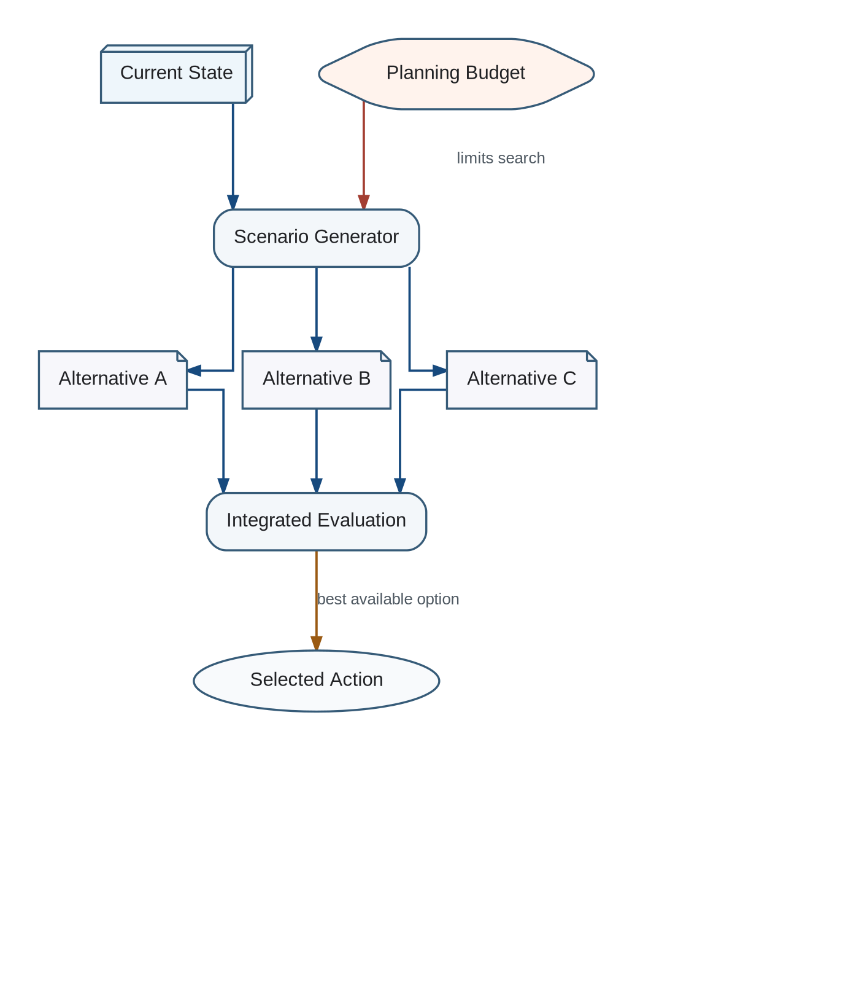

Planning does not directly answer what to do. It constructs a bounded set of possible actions and multi-step scenarios. Each scenario includes predicted states, branch probabilities, temporal attributes, resource requirements, and uncertainty.
Bounded Planning and Action Selection

Planning generates multiple temporally attributed alternatives; Integrated Evaluation selects among them under a processing budget.
The alternatives are passed to Integrated Evaluation, which selects the currently preferable option. The behavioral result then re-enters the cognitive system as new input and is evaluated again.